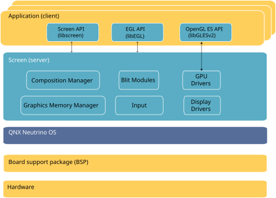
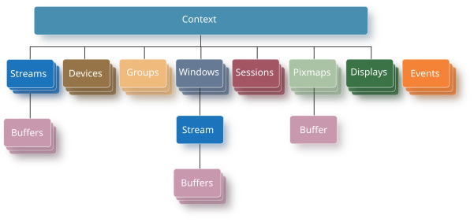

The Screen Graphics Subsystem is based on a client/server model where an application is a client that's requesting graphics services from the server (Screen). It includes a composited windowing system as one of these services, which means all application rendering is performed on off-screen buffers, which then can be later used to update the display.

Screen supports hardware-accelerated applications rendering and hardware-accelerated compositing. Screen is also designed to support applications that do software rendering.
Screen has a plug-in architecture. It loads hardware-specific modules to gain access to resources such as display controllers, 2D and 3D accelerators (GPUs), and input devices.
The Screen API provides access to graphics functionality mainly through different components. These components each offer specific functionality for your application.
All Screen API components, with the exception of events, must be associated with a context. The first step for all Screen applications is creating a Screen context. For example:
screen_context_t screen_ctx;
screen_create_context(&screen_ctx, SCREEN_APPLICATION_CONTEXT);
This context establishes a connection between your application and Screen. Without this connection, your application can't communicate with Screen to access any functionality.

A buffer is an area of memory that stores pixel data. Although a buffer can be created in the scope of a context, it can't be used by Screen unless it's attached to a window, stream, or pixmap.
Multiple buffers can be associated with a window or stream, but only one buffer can be associated with a pixmap.
A context provides the setting for graphics operations within the windowing environment.
All other API objects, with the exception of events, are created within the scope of a context and access to these objects is always with respect to the context associated with the object. You can identify and gain access to the objects (e.g., windows, groups, displays, pixmaps) to set or change their properties and attributes.
Devices, displays and windows are dependent on the context, which is associated directly with events, groups, and pixmaps.
A pixmap is an off-screen rendering target. Its contents can be made visible only by copying them to a window buffer. This can be done by using the native blit Screen API function, or by using the pixmap as an OpenGL ES texture.